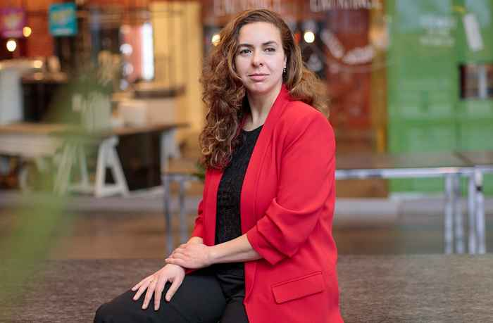

IA4BC features 6 invited talks from leading researchers across human-robot interaction, behavioral science, social neuroscience, and AI ethics. The speaker lineup reflects deliberate diversity in geography, gender, and career stage.

Neurophysiological Dynamics of Trust in Human–AI Interaction: A Multi-Level Study of Brain, Hormone, Mind, and Behavior
As artificial intelligence (AI) increasingly participates in human decision environments, understanding how trust emerges and breaks down in human–AI interaction has become a central challenge for information systems research. While prior work has predominantly focused on behavioral measures, the underlying neurophysiological mechanisms of trust remain largely unexplored. In this study, we investigated the multi-level dynamics of trust during face-to-face interaction with an embodied intelligent agent. Participants engaged in decision-making tasks with a humanoid robot while neural activity was recorded using functional near-infrared spectroscopy, salivary oxytocin levels were assessed, and self-reported trust and behavioral influence were measured. We experimentally manipulated system reliability (congruent vs. erroneous decisions) and social expressiveness (animated vs. stationary behavior). Results demonstrated that reliability constitutes the primary foundation of trust: agent errors significantly reduced both reported trust and behavioral influence. Social expressiveness modulated these effects. Animated agents elicited stronger prefrontal activation and enhanced neural–hormonal coupling. Notably, elevated oxytocin levels were associated with reduced trust and diminished behavioral influence when expressive agents committed errors, indicating a context-sensitive vigilance response rather than a simple affiliative bonding mechanism. Together, these findings establish a multi-level neurophysiological framework for understanding trust in human–AI interaction and reveal a critical design trade-off between social expressiveness and trust robustness in intelligent systems.
Dr. Frank Krueger is Professor of Systems Social Neuroscience at George Mason University, where he leads the Social Cognition and Interaction: Functional Neuroimaging (SCI:FI) Lab and serves as Core Faculty at the Center for Advancing Systems Science and Bioengineering Innovation. He is also Honorary Professor of Psychology at University of Mannheim, Germany. Trained in psychology, neuroscience, and physics, his research focuses on the psychoneurobiological foundations of trust in human–human and human–AI interactions. His work integrates behavioral science, social neuroscience, and neuroergonomics to understand how trust emerges, adapts, and can be designed in increasingly autonomous socio-technical systems. Dr. Krueger has authored over 240 publications and edited The Neurobiology of Trust with Cambridge University Press. He is Specialty Chief Editor for Frontiers in Social Neuroergonomics and Founder and President of the TRUST Foundation (Transdisciplinary Research Union for the Study of Trust), advancing global, transdisciplinary collaboration on trust in the age of AI.
Response Generation for Motivational Interviewing: Dialogue Strategies toward Behavior Change
Motivational Interviewing (MI) is a collaborative style of communication designed to elicit a client's own motivations for behavior change. Generating counselor responses in MI has recently attracted growing attention in dialogue generation research, yet producing responses that genuinely guide clients toward change remains a challenge. In this talk, I will review recent studies on response generation in MI and highlight the importance of dialogue management in eliciting clients' own statements in favor of change ("change talk"). To address this challenge, I will present our schema-based approach to dialogue strategy decision, in which the system dynamically determines the focus of each response in a manner grounded in MI principles. I will also discuss evaluation methods for assessing how well generated responses align with MI principles and skills. Finally, I will reflect on the risks of over-reliance on AI in counseling communication and what they imply for the responsible design of such systems.
When agents move us: Empathy beyond explanation and persuasion
Agents increasingly influence how people think, decide, and act, making the design of trustworthy behavior-changing interactions an important challenge. Recent research has focused heavily on explanation, persuasion, personalization, and trust, yet human responses to agents are also shaped by social and relational processes that are not fully captured by these perspectives. In this talk, I focus on empathy as a lens for understanding how people come to accept and respond to agent influence. I first review recent developments in human–agent interaction and behavior-change research, and then introduce examples from our studies on self-disclosure, empathic behavior, trust, explanation, persuasion, and responsibility. These findings illustrate how agent influence can emerge through multiple pathways, including subtle interactional cues and social evaluation. Finally, I discuss how future agent design might move beyond maximizing persuasive effectiveness toward supporting influence that is understandable, acceptable, and compatible with human agency.
Takahiro Tsumura is an Assistant Professor at the Faculty of Information Networking for Innovation and Design (INIAD), Toyo University, Japan. His research focuses on human–agent interaction, with particular interest in empathy, trust, responsibility attribution, and behavior change in interactions with AI agents and robots. He studies how people accept, rely on, and emotionally respond to agents in situations where explanations are limited, ambiguous, or difficult to interpret. His recent work explores the design of agents that can support human judgment and shared responsibility beyond explicit explanation, including the role of empathy and nonverbal or non-semantic cues in agent-mediated decision making.